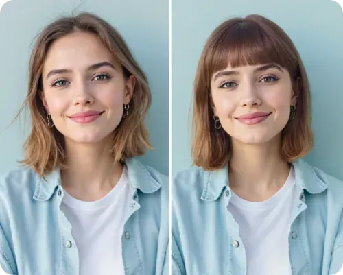
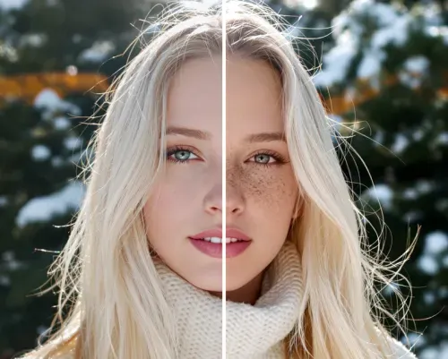

我每周整理自拍的一条龙修图流程：从脸型分析到多平台裁剪
以前修一张人像要在四五个 App 间来回切换，现在用 Facetune 一条链走完——从 AI 脸型分析定位风格，到换装试衣、精修、按平台比例裁剪，导出直接发。
我每周都要做一件事：把这一周拍的活动照、自拍、合影挑出来，修完后发朋友圈、小红书和抖音。以前这套流程要开四五个 App 来回跳——Lightroom 调基础光影、美图秀秀修皮肤瘦脸、专门的发型 App 试新发型、换装 App 看看换套衣服效果咋样，最后每个平台还得单独开一次裁剪工具调比例。一张照片折腾二十分钟起步，发之前还得反复切换检查。
现在我把整条链收进了 facetune官网，操作路径固定下来之后，一张图从导入到导出稳定在三分钟以内。
旧流程卡在哪
先说痛点，这样你才能理解为什么我非要把流程整合起来。
第一，定位靠瞎蒙。 以前我修图就两个动作：瘦脸拉到自己觉得不违和的程度，磨皮拉到"干净就行"。但我是方脸，瘦脸一味往窄的拉会把下颌线修没，修完反而比原图还怪。发型也一样，想换发型就凭感觉找个热门款试，试完发现和我的额头宽度不搭，白折腾。
第二，工具切来切去丢信息。 在 A 修完皮肤到 B 试发型，图片每次导出再导入都会压缩一次画质。而且每个 App 的脸部识别定位不完全一致——美图秀秀识别的脸型和发型 App 识别的脸型差了两毫米，换过来位置就歪了。
第三，多平台裁剪是重复劳动。 发朋友圈要 1:1，小红书要 3:4，抖音封面要 9:16。以前存三个文件手动裁三遍，比例还容易调错，裁完才发现脸被切掉了一半。
新流程：Facetune 一条龙
现在的路径是固定的，我按顺序走，不用想下一步该开什么 App。安装包从 官方下载 拿就行，iOS 和 Android 平台都有：
Step 1：导入 → Face Shape Detector 做定位
拖一张照片进来先别急着修。我先跑一遍 AI 脸型分析——这一步不产生任何实际修改，只是帮我"拍个片"。

3 到 5 秒后它给我一份报告：我的脸是方形（下颌角硬朗、额头宽），修图重点是下颌角圆润化、适当增加苹果肌，发型方向应该选中长发或者波浪卷来柔化线条。以前我总喜欢把太阳穴往里收，报告告诉我这是错的——方形脸太阳穴本来就不窄，收了反而显得头重脚轻。
这一步相当于把我从"凭感觉修"拉回到"有依据地修"，定位准了后面每一步都不白做。
Step 2：Hairstyle Analysis + AI Clothes Changer 试风格
定位完脸型，直接在同一个流程里往下走——发型分析会继承刚才的脸型数据，给我推荐三到四款适合的发型。点一下就能实时预览，不满意换一个。

发型确定之后，如果我想看看换套衣服会不会更搭（比如今天拍的是办公室照片，想试试休闲款或者正式款），直接切到 AI Clothes Changer。选个风格——西装套装、卫衣牛仔裤、甚至动漫款都行，或者直接输关键词 "off-shoulder white dress"。AI 在 5 到 15 秒内生成候选，不满意换关键词再来一次。风格库远不止这些，facetune文档里有完整的预设列表和每个风格的效果示例。
这一步的好处是：发型和衣服在同一个引擎里生成，人脸和身材是同一份识别数据，不会出现"发型 App 觉得我头在左边、换装 App 觉得我头在右边"的错位问题。
Step 3：Retouch + Reshape 精修
风格定完，才开始做真正的精修。根据 Step 1 的脸型定位，我知道该把下颌角磨圆一点、苹果肌用 Glow 打个圆形高光，而不是瞎拉颧骨。AI 生成的发型和衣服难免有接缝——脖子和新衣服领口之间、头发和原图背景之间，我用 Smooth 配合 Details 局部处理一下就干净了。
Step 4：Lights + Details 收尾
光影是很多人修图忽略的地方。AI 换装的时候可能会生成一个和原图光源方向不一致的衣服阴影——原图是窗边左光，AI 生成的衣服阴影却在右边。这时候用 Lights 工具单独调整衣服区域的亮度和阴影就行，不用把整个图的光影重调。Details 工具给衣服面料加一点纹理感，看起来更像真实穿着。
Step 5：Crop 按平台比例批量裁
最后一步裁剪。Facetune 的 Crop 工具内置了所有常见比例——1:1 正方形（朋友圈、小红书封面）、3:4 竖图（小红书详情）、9:16 全屏竖图（抖音封面）、16:9 宽屏（B站横屏、壁纸）、2:3 竖版海报（杂志封面）。选好比例，打开三分线或者黄金分割辅助线，把眼睛放在上方三分线的位置，头顶留适当呼吸感，Done。
裁完 1:1 存一份，再裁 3:4 存一份，再裁 9:16 存一份——同一个引擎、同一份构图、比例无缝切换，不会出现每次裁完脸的位置都不一样的情况。
实操中最容易断链的两个环节
这条流程我跑了快两个月，有两个地方一开始经常出问题，现在我有固定的处理办法。
第一个坑：AI 换装的边界接缝。 新衣服和原图里脖子、头发、手的衔接处，AI 经常会留一条明显的缝，或者衣服的领口和脖子之间出现不该有的空隙。我现在固定用 Smooth 工具在接缝位置轻轻刷一下，再用 Details 刷回来——Smooth 把缝填上，Details 把领口的纹理补回来，基本能做到看不出是换过的。多人合影的时候要注意，AI Clothes 可以分别选每个人换不同风格，别一口气全换，每个人的光影方向要单独调。
第二个坑：裁剪的时候主体被切掉。 我一开始裁抖音封面（9:16）的时候，经常把手指或者一撮头发切在画面外，发出去才发现。现在养成了一个习惯：裁完之后放大检查边缘——四个角都看一遍，确保手指、头发丝、衣服边缘都完整。多人合影更要小心，每个人的头和肩膀都不能裁掉，C 位的人要尽量居中。
效果和边界
说具体数字。以前一张图从导入到导出，在四五个 App 间切换，平均要 20 分钟。现在固定流程走完，平均 3 分钟以内——少了 4 次 App 打开关闭、少了 3 次不同格式的文件导入导出、裁剪的重复劳动从 3 遍变成了 3 次同引擎操作。画质也不再因为多次导入导出被压缩。
但这套流程也不是什么场景都适用。AI 换装适合偶尔玩梗或者创意表达，如果是正式场合要用的照片（比如简历头像、商务宣传图），还是得拍真实的穿着效果——AI 生成的衣服面料质感再好，穿的终究不是自己。脸型分析也只是个参考，审美是主观的，AI 推荐的"最适合"不等于我最喜欢，有时候跳出舒适圈试一个 AI 没推荐的发型反而有惊喜。
总的来说，把修图流程收进一个工具、按固定顺序走之后，我每周花在修图上的时间从两个小时缩到了二十分钟，剩下的时间可以拍更多照片或者干别的。这就是我想要的状态——工具负责把流程变快变稳，审美和创意还是我自己的。顺带一提，Facetune 的详细资料我在三个仓库都留了副本，GitHub 是主力同步，Gitee 和 GitCode 方便国内读者直接访问。